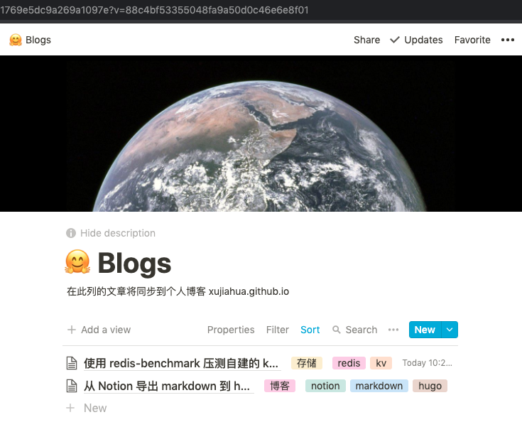
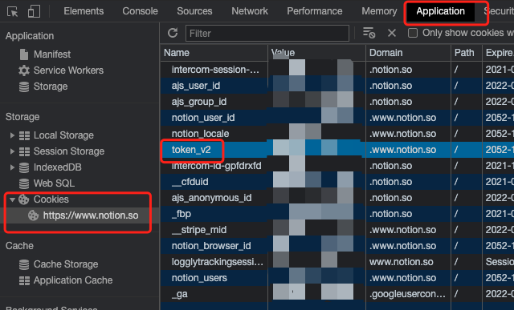

从 Notion 导出 markdown 到 hugo 项目
目的
好久没更新博客了，最近半年使用 Notion，体验很棒。
之前写博客的过程：使用 Typora 编辑 markdown，使用 Hugo 生成静态页面，上传到 github 使用 github pages serving。参考：
Github pages重新开始：使用Hugo、Typora
怎么把我 Notion 中的文章同步到我的博客呢。这是本文目的。
主要是写了一个 notion-mk 的程序将 notion 文章导出到 hugo 工作目录。后面的工作与之前保持一致。
notion -- notion-mk(todo) --> hugo directory
-- hugo generate --> static html/js/css
WIP
代码如下：
功能
- Download images
- Notion extract to markdown
- markdown hugo compatiable
- image location?
- remove title from markdown, now #…
- support category
- support tag
- table of content at the beginning
使用
将要发布的文档添加到这个 list 页面

触发命令
notion-md -i cab2ea6d530341769e5dc9a269a1097e -t ${TOKEN} -o /Users/jiahua/hugo-blogger/content/posts -p ../../images/ -v
其中 TOKEN 获取位置如下：

生成 markdown 和图像文件到对应的目录：
$ git status
On branch master
Your branch is ahead of 'origin/master' by 1 commit.
(use "git push" to publish your local commits)
Untracked files:
(use "git add <file>..." to include in what will be committed)
content/posts/Notion-markdown-hugo-78139407-85c5-4a75-b288-b54d5c3df34b.md
content/posts/redis-benchmark-kv-a3e78900-612a-4d04-b2aa-fc6f0908b431.md
static/images/Untitled-02741d53-086d-436b-aac8-87e41738754d.png
static/images/Untitled-eb9ff680-4294-4e6f-9e98-9874bb0b7498.png
nothing added to commit but untracked files present (use "git add" to track)
CI
- Github Action (notion to hugo markdown)
- Github Action (hugo to static page)
参考资料
SDK
Notion 官方还未提供 API，有好事者逆向抓包后，准备了非官方 API 库。
我不需要从抓包开始做了。站在前人的肩膀上。
Go
Python
参考教程
Making a Blog Using Notion, Gatsby, and Github Pages | Arnaud Valensi
Last modified on 2021-04-12